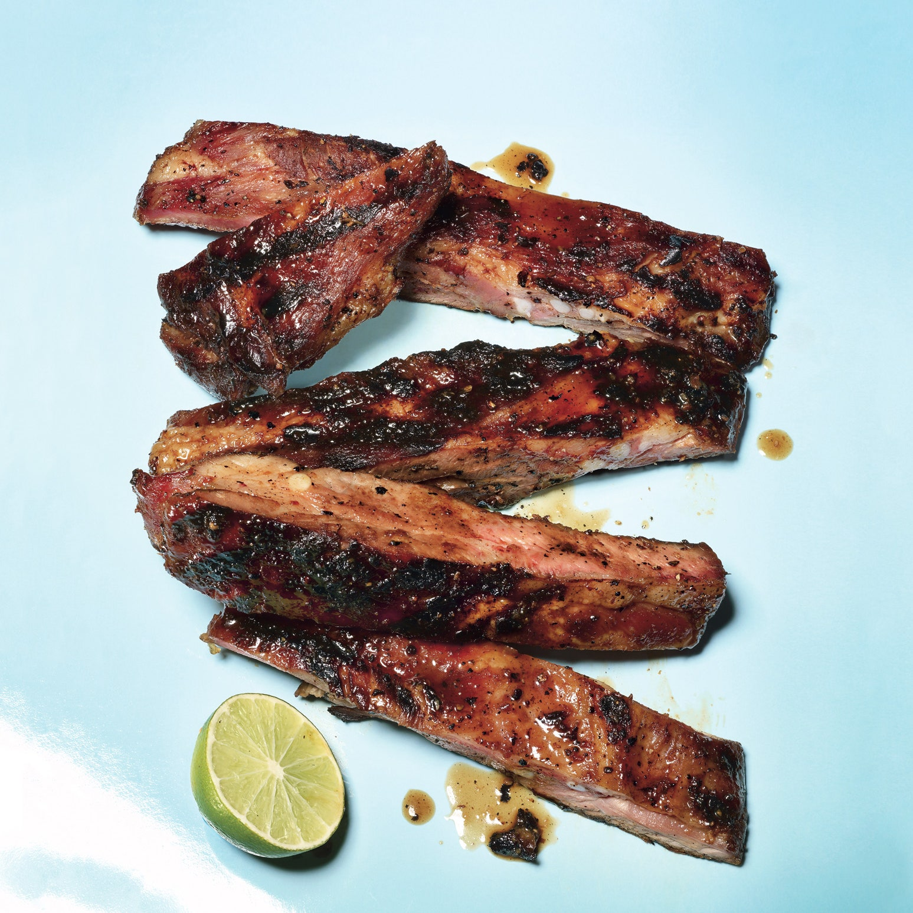

The Ribs

This is an icebox cake pictured above, not ribs.
Paragraph about how this is a recipe about ribs, and not in fact about ice box cakes.
Don't let the picture fool you, you'll be unhappy with the result if you didn't read the title.
I'm really not aware of any method to start out with a large chunk of dead animal and end up with a baked good.
Lmk if you should discover one.
Description of putting all of the ingredients into the blender and then soaking the ribs in the marinade overnight.
Ingredients
- Ribs
- Ginger
- Garlic
- Soy sauce
- Fish sauce
- Salt
- Pepper
- Lime
- Time
Steps
- Chop ginger and garlic in the food processor
- Transfer ginger and garlic into bowl with soy sauce and fish sauce
- Add salt, pepper, and lime juice to taste
- Cut ribs into sections of 2-4 ribs each and divide evenly in freezer bags
- Distribute rib marinade among the freezer bags evenly, then toss and flip bags to coat ribs
- Place ribs in the fridge ideally for a few hours to overnight, flipping them periodically to make sure everything is covered
- Who am I kidding, you did everything last minute and skipped the last step. Oh well, hope you used enough ginger and garlic to make up for the lack of order in your life... I bet you're gonna say the whole store was out of Time when you went. Ya-huh...
- Throw ribs on charcoal grill and flip periodically to make sure both sides have a nice char to them. Don't overcook them. Seriously, don't waste good meat like that. That one person who says they like them well done but don't want any char can suck it.
- Throw them to the wolves and watch a bunch of perfectly nice individuals attack a plate of meat like we all still live in caves. If you were smart you set aside leftovers for yourself without telling anyone. If not, well now you know.
Back to index page